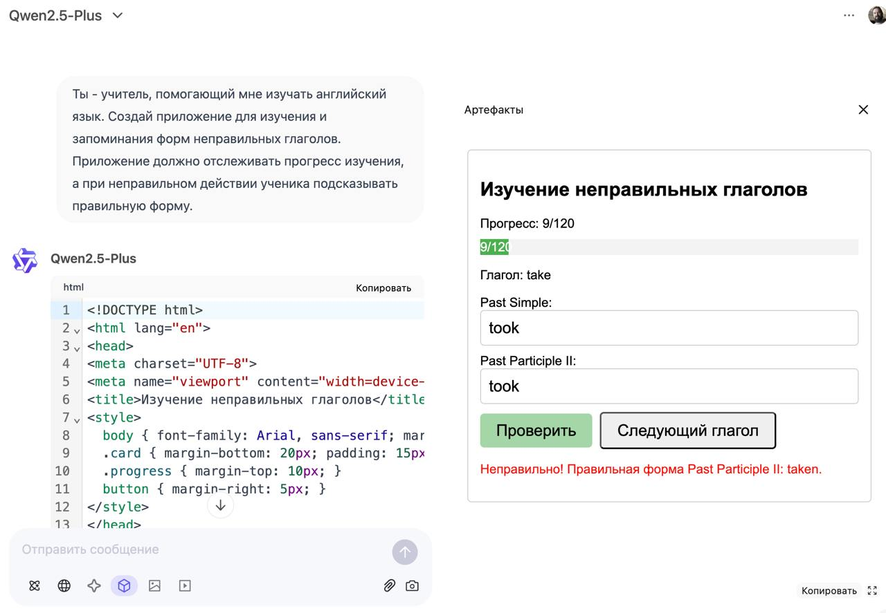
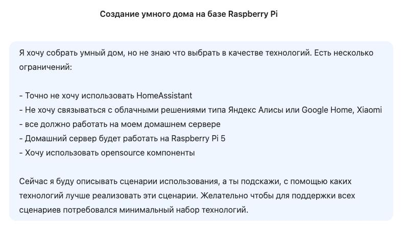

Страница 5
Бот-учитель по Python
posted on 2025-03-02

В описании канала 40Ants сказано, что я верю в то, что в мире всё связано и не бывает случайностей. Или, как говорил О.Ж. Грант в фильме "Автострада 60": "Если что-то произошло, оно было неизбежно."
Последнее время я интересуюсь темой автоматизации разных задач с помощью ботов. И вот, по какой-то "случайности" (случано ли?) мне удалось бесплатно залететь на интенсив по созданию ИИ ботов от университета Зерокодер. Интенсив прошел на прошлой неделе, а сегодня хочу с вами поделиться впечатлениями.
🤓 Как работает ИИ бот.
- Вы пишете промпт - текст очерчивающий задачу бота и инструкции как он должен действовать.
- Опционально можете добавить какие-нибудь данные, например PDF с описанием компании, данные о контактах сотрудников, типовые вопросы и ответы.
- Далее бот на каждую реплику пользователя берет промпт, все данные + N последних записей из переписки с клиентом и отдает их нейронке.
- Ответ нейронки отправляется пользователю.
🤨 Что меня удивило.
- Сам промпт для ИИ бота тоже можно сгенерировать с помощью нейронки, а потом лишь немного подредактировать. Пишешь нейронке: "Напиши промпт для ИИ бота который будет делать то-то то-то" и вуаля, у вас готовая "рыба"!
- Базу данных, например типовые вопросы пользователей на заданную тему и ответы на них - тоже можно сгенерировать нейронкой. Конечно по хорошему текст надо будет перепроверить.
☹️ Что пока непонятно.
Мы делали бота на конструкторе Suvvy и там бот может иметь интеграции. Например он может заводить клиента в CRM или записывать его на прием, добавляя встречу в Google Calendar. Так вот я пока не очень понимаю, как бот решает, что клиент хочет записаться на прием. Возможно при активации интеграции Suvvy добавляет что-то в промпт?
😎 Бот который у меня получился в ходе интенсива.
Я делал бота, который помогает изучать Python: https://t.me/guru_of_python_bot Можете тут с ним пообщаться (будет активен до 5 марта, дальше закончится пробный период в Suvvy).
😱 Проблемы с которыми можно столкнуться.
Работа ИИ бота созданного на конструкторе стоит денег. К примеру, обработка каждого вопроса ученика моим ботом-учителем по Python стоит от 3 до 6 рублей. Если ученик задал 100 вопросов, то он обошелся вам в 600 рублей. Так что для бота который предоставляется бесплатно это не очень подходит. Другое дело, если вы создаете коммерческого бота, который к примеру обрабатывает заявки клиентов - отвечает на пару их вопросов и записывает на прием. Тут и количество вопросов в сессии скорее всего будет ограничено, и количество денег которые принесет клиент компании будет значительно превышать оплату за работу бота. Короче, надо внимательно считать.
Так же в Savvy бот иногда может работать с ошибками и кажется там пока нет какого-то монитонига, есть только лог общения бота с клиентом.
🤔 Что дальше.
Тема ботов интересная, но понятно, что если делать на этом бизнес, то желательно поискать решение которое получится развернуть на своем сервере. Это позволит лучше контролировать его работу, возможно сделает дешевле обработку каждого сообщения и в случае если заказчик пожелает - позволит развернуть бота на его серверах.
Self-hosted решений для создания AI ботов наверное много, но пока что я накопал только Python библиотечку Rasa. Судя по описанию, боты в ней могу определять намеряние пользователя и действовать соответственно. Буду пробовать.
К чему это? Перед тем как создавать свою платформу для создания ботов, хочу исследовать как работают существующие решения.
Если знаете ещё конструкторы которые допускают self-hosted режим, напишите пожалуйста про них в комментариях к посту?
Как учить неправильные глаголы с помощью нейросети?
posted on 2025-03-02

В прошлом посте я писал про универ Зерокодер и то как их вебинар мне открыл глаза на использование нейросетей. Так вот на прошедшей неделе я прошел их интенсив по созданию чатботов на основе ИИ на одном из уроков которого увидел ещё один интересный кейс.
Оказывается, в некоторые нейронки встроен так называемый "канвас" - это такая песочница, где нейронка сразу может запустить код который создала. К примеру китайская нейросеть Qwen в таком режиме пишет код HTML странички и тут же рендерит его сбоку. При этом пишет не только HTML, но и CSS + JavaScript.
Но это все преамбула, а было всё так:
В среду прихожу я домой, а жена с порога заявляет: "Иди поучи неправильные глаголы с сыном, завтра у него контрольная."
А я отвечаю: "Cпокойно, сейчас мы научим нейросеть учить сына английскому!"
И вот, открываем с ним Qwen, и через полчаса у нас готово веб-приложение, которое тестирует знание неправильных глаголов прям в интерфейсе нейросети!
Конечно понадобилось несколько итераций, чтобы улучшить работу приложения. Например изначально оно содержало всего 5 глаголов, но я нашел в сети PDF со всеми неправильными глаголами английского языка и сетка за полминуты переписала код. Я даже решил опубликовать это приложение на GitHub, и теперь учить с ним глаголы может каждый. Вот, попробуйте сами!
При этом мы не написали ни строчки кода. А уж какой эффект это произвело на ребенка! Он тут же принялся пробовать с помощью Qwen делать игры наподобии Geometry Dash, Five Nights at Freddy и Minecraft :)
Короче, нейронки рулят!
Продолжение про нейросети и умный дом
posted on 2025-03-01

Недавно я решил погрузиться в тему умного дома, вдохновившись интенсивом по нейросетям от Зерокода. Этот курс открыл мне глаза на то, как много задач можно решать с помощью нейросетей — от создания ботов до разработки веб-сайтов. И я подумал: а почему бы не использовать нейросети для проектирования умного дома? В прошлом посте я лишь намекнул на эту идею, а теперь готов рассказать, что из этого вышло.
Начну с того, что изначально я даже не знал, чем заменить Home Assistant. Меня не устроило, что эта система диктует, какая операционная система должна быть установлена на Raspberry Pi. Мне хотелось больше гибкости и контроля над процессом. Поэтому я решил пойти другим путём и привлечь нейросети к проектированию системы умного дома.
Сначала я сформулировал десяток сценариев, которые должна была решать моя система. Среди них были сбор данных с датчиков, построение графиков, удалённый доступ к этим данным, а также более специфические задачи, например, обнаружение утечек воды. После этого я приступил к работе с нейросетью DeepSeek.
Я начал с того, что описал роль нейросети: она должна была помогать мне проектировать умный дом. Также я сразу обозначил ограничения: не использовать Home Assistant и разворачивать систему на Raspberry Pi. На иллюстрации к тому посту промпт, который я задал нейросети, чтобы проектировать умный дом. Уже сразу на этот промпт я получил в ответ рекомендации, на каких технологиях можно собрать нужное мне решение.
Далее я закидывал в нейронку сценарии, которые мой умный дом должен решать, а она в ответ описывала, какие компоненты понадобятся и как их настроить чтобы получить желаемое.
Ещё порадовало то, что когда я спросил в чем разница между OpenHab и Node-RED, DeepSeek не только текстом описал их различия, но и составил сводную таблицу где сравнил фичи обоих решений. Так я понял, что мои сложные сценарии придется реализовывать на Node-RED. Самое крутое то, что не приходится собирать информацию по десяткам статей, и можно получить только нужное в данный момент уже собранное и проанализированное.
В общем, нейросети – топ. И спасибо онлайн университету Zerocoder за вдохновляющий интенсив. Кстати, порой они устраивают такие интенсивы бесплатно - следите за новостями на их сайте или канале.
Как нейросети строить умный дом помогают!
posted on 2025-02-22

Раньше я почему-то считал, что нейросети годны только чтобы тексты и картинки генерить, но недавно посмотрел пару вебинаров про то, какие ещё задачи можно решать с помощью LLM и прям воодушевился! Один из возможных сценариев использования ChatGPT, который там приводился, это использовать нейросеть в роли учителя. При чём не важно в какую тему хочешь погрузиться, математика это, программирование или ещё что-то. Главное что она умеет корректироваться и отвечать на дополнительные вопросы. Хотя конечно и лажу может генерить, тут уж принцип "доверяй но проверяй" никто не отменял.
Короче, одна из тем до которой у меня пока не доходят руки, это настройка умного дома. Когда-то у меня уже была небольшая инсталляция HomeAssistant на RaspberryPi, но когда я решил её обновить, оказалось что проще собрать всё заново. Однако я с удивлением обнаружил, что теперь HomeAssistant уже так просто не накатишь на ванильную Raspberry Pi OS - он теперь хочет налить на флешку свой собственный образ операционки, заточенный именно под запуск HomeAssistant.
Мне же хотелось чтобы OS была базовой и на неё можно было ставить разные другие пакеты. Так что я стал думать чем заменить HomeAssistant. Нашел что есть OpenHAB. Затем мне попалась на глаза аббревиатура MING, обозначающая связку MQTT, InfluxDB, Node-RED и Grafana. Стало непонятно, все эти штуки ставятся в дополнение к OpenHAB или вместо.
И ещё у меня уже накопился приличный список сценариев использования, которые хотелось бы реализовать, и было не очень понятно, оно реализуемо на данных технологиях, или нужно что-то ещё.
Повезло, что сегодня выдался относительно свободный день и я наконец решил собрать что-то работающее. Но как правильно собирать - не знал. Тут-то и пригодился диалоговый режим с нейросеткой. Я решил попробовать новую LLM DeepSeek, благо что в России она доступна без VPN и к тому же совершенно бесплатно.
Но что из этого вышло, вы узнаете в следующем посте :)
Мониторинг проектов в Yandex Cloud
posted on 2025-02-16

В последнее время я стараюсь максимально стандартизировать инфраструктуру своих проектов. Особенно это касается трех вещей:
- деплоя
- мониторинга
- логов
В части деплоя для пет-прожектов решил максимально все упростить - компилирую бинарник и запускаю под systemd. Скрипт сборки написан на Lisp и шарится между проектами. Если интересны подробности, пишите в комментах, сделаю про это отдельный пост.
Сейчас же хочу немного рассказать про мониторинг.
Для мониторинга каждый проект имеет "ручку" /metrics, которая умеет отдавать данные в формате Prometheus. Раньше у меня была своя инсталляция Grafana, которая умеет забирать данные, но с недавних пор я решил что лучше буду использовать Yandex Cloud и его сервис Мониторинг. У Яндекса есть свой демон, которому в конфиге можно указать с каких урлов собирать метрики. Выглядит конфиг сервиса примерно так:
routes:
- input:
plugin: metrics_pull
config:
namespace: my-project
url: [http://localhost:10114/metrics](http://localhost:10114/metrics)
# Даже без app метрик, с одного lisp процесса получается 70 метрик,
# чтобы было дешевле, шлём их только раз в минуту.
poll_period: 60s
format:
prometheus: {}
channel:
channel_ref:
name: cloud_monitoring
Кладёшь его в файлик типа /etc/yandex/unified_agent/conf.d/my-project.yml и дальше демон unified-agent сам собирает метрики и отправляет их в облако. Естественно, генерацию таких конфигов я тоже собираюсь автоматизировать.
Интерфейс облачного Мониторинга достаточно интуитивен. Там можно собрать дашборд сервиса и, что самое важное, сконфигурировать алерты - и когда с сервисом происходит что-то нехорошее, прилетит уведомление на почту или в Telegram.
Для сбора метрик внутри процессов использую библиотеку prometheus.cl и несколько своих дополнений:
- clack-prometheus – позволяет сконфигурировать /metrics эндпоинт
- reblocks-prometheus – делает примерно то же самое для проектов использующих фреймворк Reblocks + экспортирует пару метрик, показывающих сколько сессий сервер держит в памяти и сколько страниц в этих сессиях.
- https://github.com/40ants/prometheus-gc – собирает информацию о том сколько памяти в каком поколении garbage collector у SBCL
Системный подход к сбору метрик позволяет предоставлять надёжные сервисы клиентам. На мой взгляд это очень важно.
Пишите в комментах, если интересно узнать про подход к сбору логов или деплою сервисов.
Шпаргалка по использованию Roswell и Qlot в Common Lisp проектах
posted on 2025-02-16

Вчера в телеграм-чате LispForever, посвященном Сommon Lisp просили подсказать, какой подход лучше использовать для запуска лиспа. Мнения разделились. Кто-то рекомендовал использовать Roswell, кто-то наоборот - был против. Я же Roswell люблю по той причине, что он позволяет легко и просто устанавливать разные реализации Common Lisp и переключаться между ними. Это особенно удобно, когда у тебя куча проектов, и каждый может использовать свою версию CL.
По той же причине, кстати, я использую и Qlot. Эта утилитка позволяет создавать виртуальное окружение для каждого проекта, и не засорять пакетами систему. Кроме того, Qlot фиксирует версии библиотек в репозитории проекта, делая сборки воспроизводимыми.
Итак, вот какими командами я обычно пользуюсь в Roswell:
# Установка лиспа
ros install sbcl-bin
ros install sbcl-bin/2.5.1
# Запуск Emacs или REPL
ros emacs
ros run
# Создание command-line утилиты и сборка ее в бинарник
ros init some-script
vim some-script.ros
ros build some-script.ros
./some-script
Ещё имеет смысл в конфиге подкрутить ограничение памяти, потому что по умолчанию оно всего 1G:
ros config set dynamic-space-size 4gb
И да. Обычно я использую не roswell сам по себе, а вместе с Qlot. Qlot позволяет ставить либы не глобально, а в директорию проекта. Как virtualenv в Python или node_modules у npm.
Так, у каждого проекта свои зависимости, а поработав с каким-то можно без проблем снести директорию .qlot.
Краткая инструкция по Qlot:
# Подключаем cutting-edge репозиторий пакетов
echo 'dist ultralisp [http://dist.ultralisp.org/](http://dist.ultralisp.org/)' >> qlfile
# Инициализируем:
qlot install
# Далее запускаем Емакс и хакаем лисп код
CL_SOURCE_REGISTRY=`pwd`/ qlot exec ros emacs
CL_SOURCE_REGISTRY=`pwd`/ qlot exec ros <любые другие команды, такие как ros build>
# Когда надо обновить зависимости (qlot фиксирует версии в `qlfile.lock`), делаем:
qlot update
Вот и всё, друзья!
SEO для Telegram канала
posted on 2025-02-14
Недавно я писал про то, что сделал чат-бота, который умеет публиковать посты из телеграм канала на сайте. Основная цель этого бота в том, чтобы привлечь в канал пользователь из органического поиска. SEO штука не быстрая, пока не понятно насколько хорошо это работает, ведь сначала надо чтобы поисковые боты проиндексировали новый контент, добавили его в выдачу, да и над раскруткой сайта в целом тоже надо работать.
Однако я тут задумался, как оценить эффективность привлечения новых подписчиков с помощью постов на сайте? Ведь Яндекс Метрику нельзя навесить на телеграм канал. В идеале хотелось бы построить классическую воронку конверсии заходов с поиска на сайт, переходов с сайта в телеграм канал и финальную конверсию в подписчика. И вот какие варианты я нашел.
В идеале, хотелось бы мерять переходы для каждого поста в отдельности. Для этого нужно чтобы ссылки на телеграм для каждого поста были уникальны. Такого можно добиться создавая под каждый пост отдельную invite-ссылку.
Какой плюс есть у способа с созданием отдельных инвайт-ссылок:
- Детальная информация о количестве регистраций с каждого поста на сайте.
Минусы:
- Проходя по ссылке, пользователь попадет просто в канал, а не на конкретное сообщение, соответствующее посту на сайте.
- Неизвестно получится ли автоматически вытаскивать статистику о количестве регистраций с каждой invite-ссылки.
- Так же я не нашел информации о том, есть ли какое-то ограничение на число invite ссылок. Если есть, то бот рискует упереться в этот потолок и такой способ перестанет работать.
Если лимит на число invite ссылок все же есть, то можно использовать одну ссылку для всех публикаций в блоге. Но тогда мы теряем тот единственный плюс, ради которого всё затевалось.
Кроме того, для меня первый из минусов перевешивает желание получать детальную статистику. Ведь теряется удобство для пользователя - мы ломаем сценарий "Перейти по ссылке и обсудить пост в телеграм канале". Но может я преувеличиваю важность этого сценария?
Теория связанности всего только лишь теория?
posted on 2025-02-12

В одном из первых постов, я писл что 40Ants это холистическое IT агенство. И я не ошибся. Сегодня я получил подтверждение того, что "всё связанно" (так кстати, и Дирк Джентли говорил).
Некоторое время назад мне в рекомендациях Яндекс Книг попалось произведение Атула Гаванде "Чек лист". На днях я закончил слушать эту аудио-книгу, и со мной начали приключаться чудеса. Буквально за один день из разных источников мне прилетела информация про чеклисты, которые люди используют для различных задач.
Первым чеклистом был чеклист по выбору парсера для сайта, упомянутый в посте из рассылки PY-CY, на которую я подписан. Пост от части про SEO, но больше про разные виды парсеров. Этой темой я понемногу интересуюсь и даже сделал фреймворк для парсинга ScrapyCL. А тут чеклист подогнали.
Вторым номером, в тот же день прилетел пост от коллеги про то, как правильно составлять отчет от проделанной работе. Если у вас в команде происходят ежедневные синки, то такой список - крайне полезная вещь.
А из поста коллеги, другой человек сослался на статью про "Стоп-слова, являющиеся маркерами в требованиях", где тоже есть чеклист, позволяющий убедиться, что требования к программному обеспечению сформулированы правильно.
Удивительно так же и то, что буквально полгода назад я изучал книгу Software Requirements (Karl Wiegers and Joy Beatty). A тут вдруг снова получил информацию о том, как правильно описывать требования к ПО.
Так что, всё связанно, и никуда от этого не деться!
Как включать протухшие workflow на GitHub Actions?
posted on 2025-02-11

Я не знаю, может это со мной что не так, но иногда мне приходят в голову идеи, реализация которых возможно никому на свете кроме меня и не нужна. Вот одна из таких идей.
У меня довольно много проектов на GitHub и у большинства из них есть workflow, которые регулярно запускают тесты на GitHub Actions. Зачем регулярно, а не только на пулл реквест? Потому что окружающий мир меняется - выходят новые версии SBCL, библиотеки-зависимости меняются, так что даже если мой код остается неизменным, в какой-то момент он может перестать работать и чем раньше я об этом узнаю, тем проще будет починить проблему. Вот для этого раз в неделю мои тесты и запускаются.
Есть только одна проблема - если в проекте больше месяца нет коммитов, GitHub автоматически отключает workflow и тесты перестают запускаться. И даже после того, как в проекте появляется PR, надо идти и вручную включать workflow. Это бесит.
И вот я подумал, было бы классно сделать сервис, который бы автоматически включал отключившиеся workflow. Как вам такая идея?
Красота для LispWorks
posted on 2025-01-31

Когда я впервые увидел LispWorks IDE, она показалась мне довольно непривычной и допотопной что ли. Там нет многих привычных вещей из Emacs. Но оказывается, если приложить усилия, то можно сделать из этого IDE конфетку. Но вероятно надо быть прямо очень мотивированным к тому, чтобы писать код именно в интерфейсе LispWorks, а не подключившись к нему из Emacs.
Недавно на Reddit анонсировали библиотеку расширений для LispWorks - lw-plugins. Она добавляет сайдбар с деревом папок, кастомные иконки, фолдинг докстрингов и многое другое. На скриншоте к моему посту демо некоторых фич.
Я добавил этот проект в "lispworks" дист на Ultralisp.org и теперь расширения можно установить легко и просто с помощью Quicklisp.
Приятно, когда люди вкладывают душу в подобные проекты.
Created with passion by 40Ants